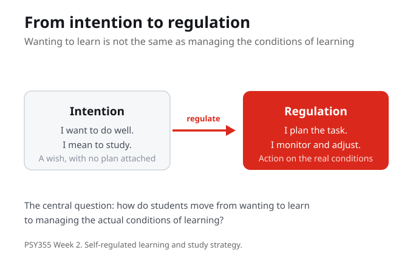
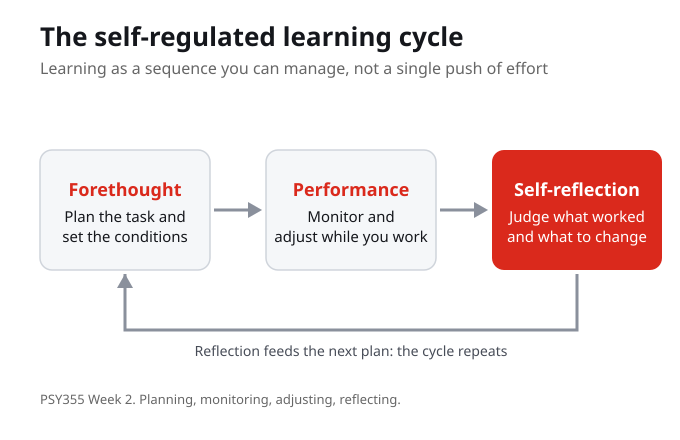
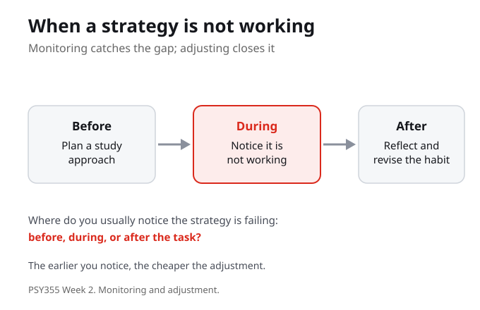

1. Self-regulated learning, as this week uses it, is best described as:
2. The central question this week asks is how students move from:
3. In this week's frame, the difference between intention and regulation is that intention is:
4. Monitoring, as the guided notes use the term, means:
5. A strategy, in this week, is best understood as:
6. This week argues that effort alone is not enough because effort also needs:
7. The reflection question asks where you usually notice a strategy is not working:
The purpose of this week is to connect psychological theory to practical learning, well being, and resilience. The work stays grounded in course sources and uses everyday academic examples so the concepts can travel beyond class.
By the end of this week you should be able to

This week turns learning into a sequence of planning, monitoring, adjusting, and reflecting. The central question is how students move from wanting to learn to managing the actual conditions of learning. Intention is the wish to do well. Regulation is acting on the conditions that make learning happen. Naming that difference is where the week begins.
Wanting to learn and managing the conditions of learning are not the same thing. Intention is a wish; regulation is the action that turns the wish into a plan you can monitor and adjust.
Think of a recent task you meant to do well. Where did the intention sit, and where did the actual regulation begin?

Self-regulated learning treats learning as a sequence you can manage rather than a single push of effort. It runs in phases. You plan the task and set the conditions, you monitor and adjust while you work, and you reflect afterward on what worked and what to change. The reflection then feeds the next plan, so the cycle repeats. The point is not to memorize the phases but to use them to read a situation: what is happening, what support exists, what barrier is present, and what action fits.
Self-regulated learning is a cycle, not a one-time effort. Planning, monitoring, and reflection each feed the next, which is why a weak result is information for the next plan rather than a verdict.
Which phase do you spend the least time on, planning, monitoring, or reflecting, and what would change if you gave it more attention?
A strategy is an approach you choose to fit a specific learning task, not a fixed rule that works everywhere. One outcome of the week is to identify a strategy that fits a specific task. Reading for an argument is a different strategy from drilling a procedure, and a strategy that helps one task can quietly fail on another. So the work is to read the task first, then pick the approach, rather than reaching for the same habit every time.
A strategy is a fit between an approach and a task, not a habit you apply to everything. The skill is reading the task before choosing the method.
Name a study habit you use by default. For which kinds of task does it actually fit, and where does it not?

Monitoring is checking how the work is going while it is going, so you can adjust before the task is over. This is where effort meets feedback. Effort needs feedback and adjustment, because working hard on an approach that is not landing only spends more energy on the same gap. Monitoring is what lets you catch the gap during the task, when the adjustment is still cheap, rather than only after, when it is expensive.
Effort without feedback is just more of the same. Monitoring is the step that turns effort into learning, because it lets you adjust while the task is still open.
Where do you usually notice a strategy is not working, before, during, or after the task, and what would catching it earlier require?
The model is a tool, not a verdict on the student. It helps by giving plain language for planning, monitoring, and reflecting, and by showing that a poor result can be adjusted rather than simply judged. It needs context because barriers are real. A guiding question for the week is what is one concrete action a student could try without pretending the barrier is simple. Self-regulation describes the learning, it does not erase the conditions around it.
The model is useful and partial at once. It names actions a student can take, while honestly holding that some barriers are real and not solved by better planning alone.
For a barrier you know well, what is one concrete action self-regulated learning suggests, and what does it still not address?
Wanting to learn and managing the actual conditions of learning are two different things. Intention is the wish to do well; regulation is acting on the conditions that make learning happen. The week begins by naming that difference so the wish can become a plan.
Self-regulated learning treats learning as a sequence of planning, monitoring, adjusting, and reflecting rather than a single push of effort. Reflection feeds the next plan, so a weak result becomes information for the next attempt instead of a final verdict.
A strategy is an approach chosen to fit a specific task, not a fixed rule that works everywhere. The skill is to read the task first, then pick the method, because an approach that helps one task can quietly fail on another.
Monitoring is checking how the work is going while it is going, so you can adjust before the task is over. Effort without feedback only spends more energy on the same gap; monitoring is what turns effort into learning.
Week 1 introduced how learning, mindset, and resilience fit together, setting up the course aim of explaining theories of learning in plain terms and using them to reflect on decisions in a healthier way. It framed learning as something worth understanding, not just something that happens.
This week makes that frame practical through self-regulated learning and study strategy. It turns learning into a sequence of planning, monitoring, adjusting, and reflecting, and asks the central question: how do students move from wanting to learn to managing the actual conditions of learning?
Once learning is something you can plan and adjust, the course turns to growth mindset: the beliefs about ability that shape whether a student keeps adjusting after a setback or stops. Regulation gives the actions; mindset asks why a student keeps using them.
Where do you usually notice that a strategy is not working, before, during, or after the task? This is not a separate assignment. Carry the question through the week, use it to prepare for class and guide your notes, and connect the course to ordinary academic, work, and family contexts.
Your notes save automatically on this device and stay after you close your browser or shut down. Use Save my notes (below) to download a copy you can keep or open on another device.
What is the central question this week is built around?
Why is a strategy described as a fit rather than a fixed rule?
What does monitoring add to effort?
How does this week treat the self-regulation model itself?
1What is the central argument or claim? Put it in one sentence.
2What evidence does the author use to support it?
3Which key concept or term carries the most weight, and how is it defined?
4What does the argument assume, and whose perspective might be missing?
5How does this reading connect to this week's topic and the other sources?
6Where do you agree, and where would you push back, and why?
7What is one question you still have after reading?
Read Panadero (2017), A review of self-regulated learning, for the structure of self-regulated learning models and learning strategy. Read for the argument, not every technical detail, and mark the sentence that best helps you answer the central question.
Use your own words to explain self-regulated learning, strategy, and monitoring. Then trace the three-part class path: name the difference between intention and regulation, work through a study situation where the plan fails, and revise one study habit using a self-regulation lens.
Choose one upcoming task and write a plan, a monitoring check, and a possible adjustment. Carry the reflection question into it, where do you usually notice a strategy is not working, before, during, or after the task?
Panadero, E. (2017). A review of self-regulated learning: Six models and four directions for research. Frontiers in Psychology. DOI: 10.3389/fpsyg.2017.00422.
Seneca Polytechnic. PSY355 subject outline: Psychology of Learning: Mindset and Resilience. Course description, course learning outcomes, and official topic frame.